This report uses the run-faithful definitions:
Input fingerprint: `90e17bae6930c296bea4b17ff93c954e9000c759b7a2a4d1e8c44a85d16f66ee`
Floating parameter count: `4022468096`
Compute device: `cuda:0`
Q1 is a bootstrap Questioner. Since its pre-training checkpoint is unavailable locally, Base is used as its baseline.
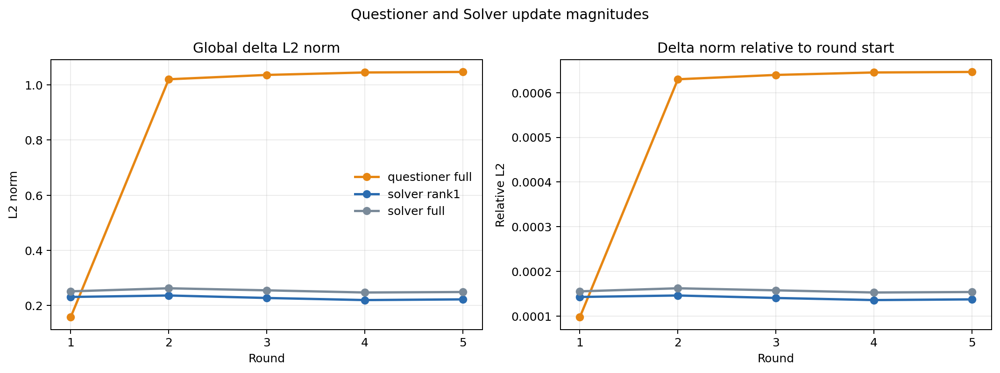
Global and relative delta magnitudes.
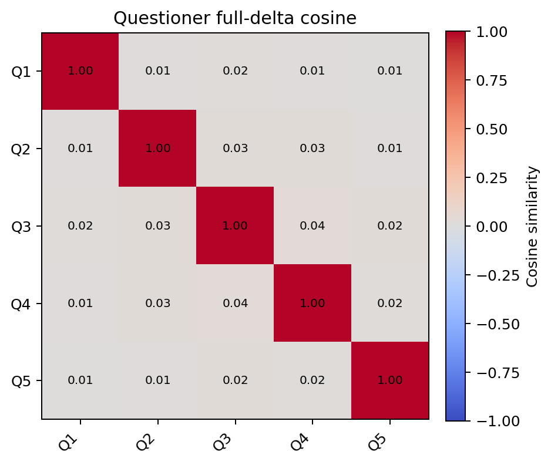
Pairwise Questioner full-delta cosine similarity.
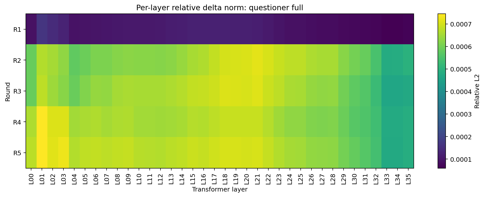
Questioner relative update by transformer layer.
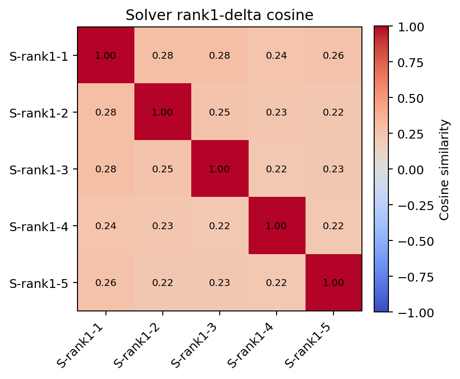
Pairwise Solver rank1-delta cosine similarity.
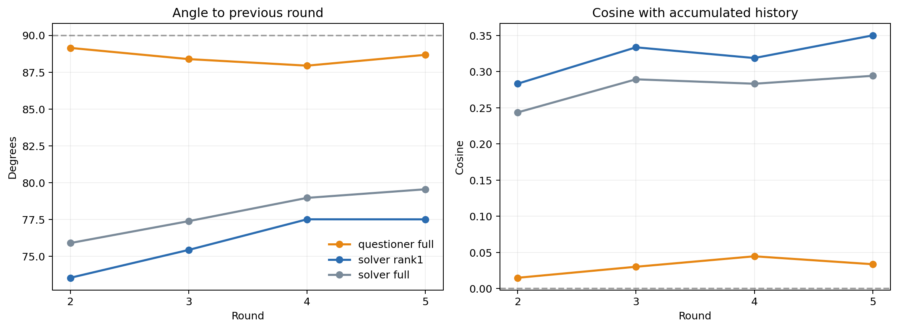
Adjacent-round turns and alignment with accumulated history.
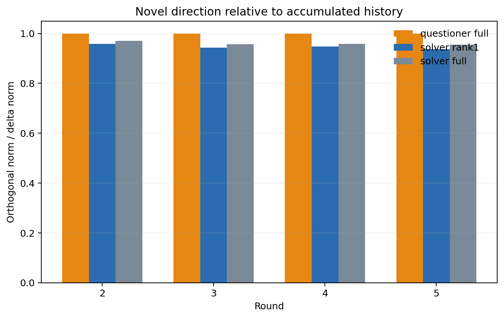
Fraction of each update orthogonal to accumulated history.
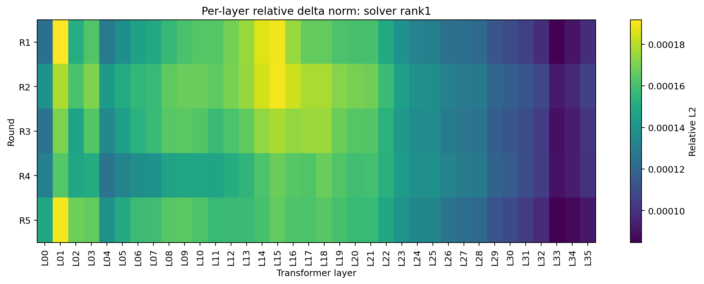
Solver rank1 relative update by transformer layer.
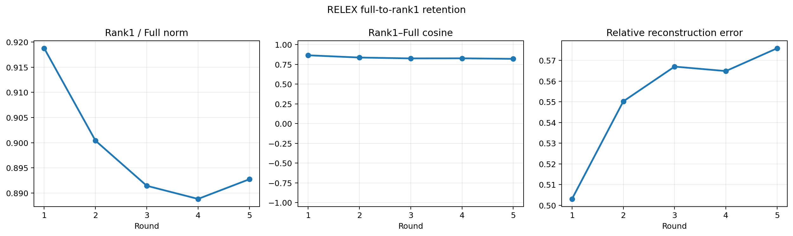
RELEX magnitude, direction, and reconstruction retention.
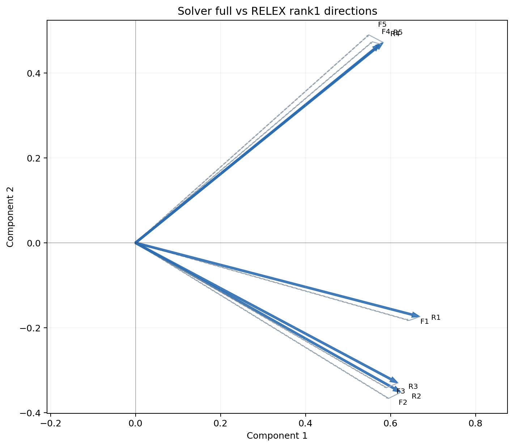
Paired full and rank1 directions in a shared exact SVD plane.
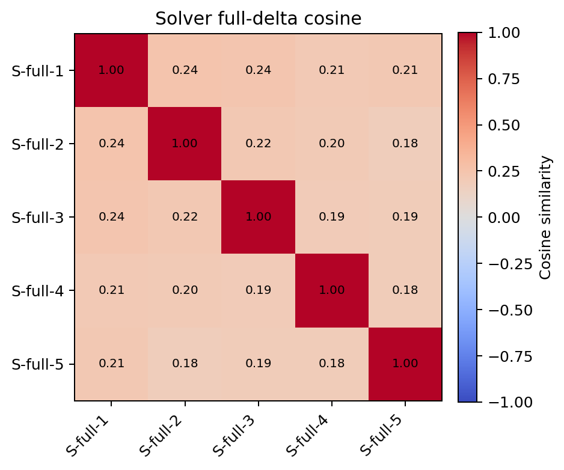
Pairwise Solver full-delta cosine similarity.
| round | rank/full norm | cosine | angle | relative error |
|---|---|---|---|---|
| 1 | 0.91877 | 0.86587 | 30.02 | 0.50306 |
| 2 | 0.9004 | 0.8374 | 33.13 | 0.55021 |
| 3 | 0.89142 | 0.82628 | 34.28 | 0.56701 |
| 4 | 0.88881 | 0.82747 | 34.16 | 0.56485 |
| 5 | 0.89272 | 0.82071 | 34.84 | 0.57586 |
| round | actual/intended cosine | relative residual |
|---|---|---|
| 1 | 1 | 0 |
| 2 | 0.99978 | 0.02119 |
| 3 | 0.99979 | 0.020527 |
| 4 | 0.99979 | 0.020639 |
| 5 | 0.9998 | 0.019794 |
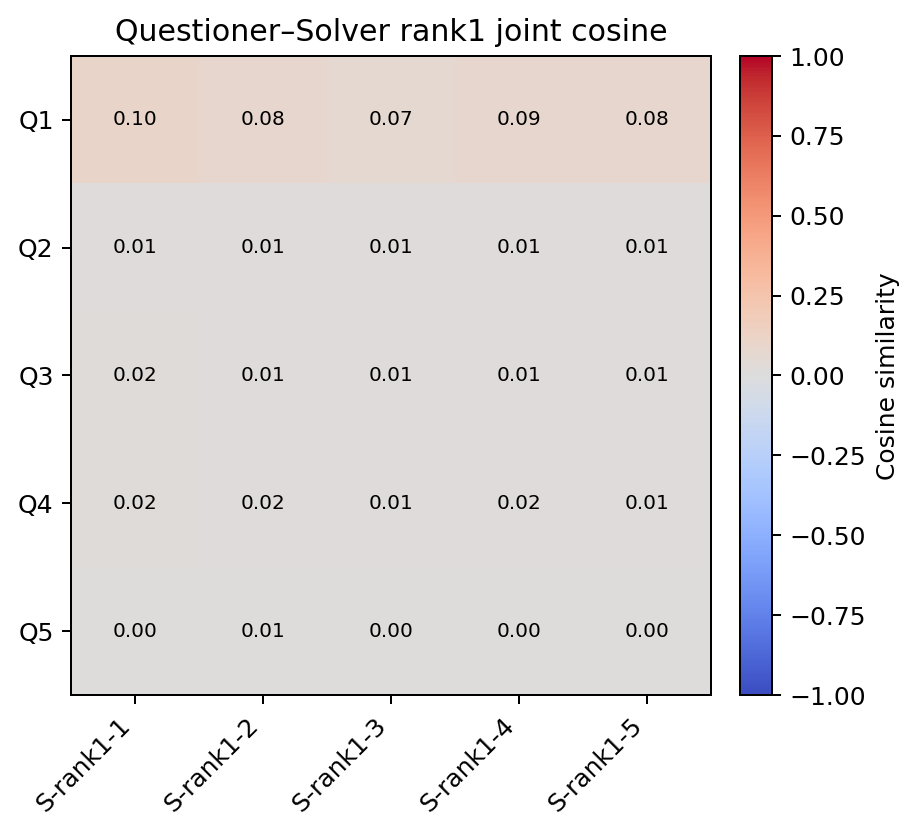
Questioner full and Solver rank1 joint cosine matrix.
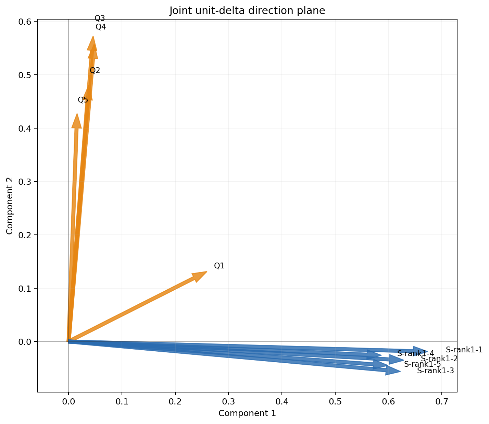
Joint unit-delta direction plane.
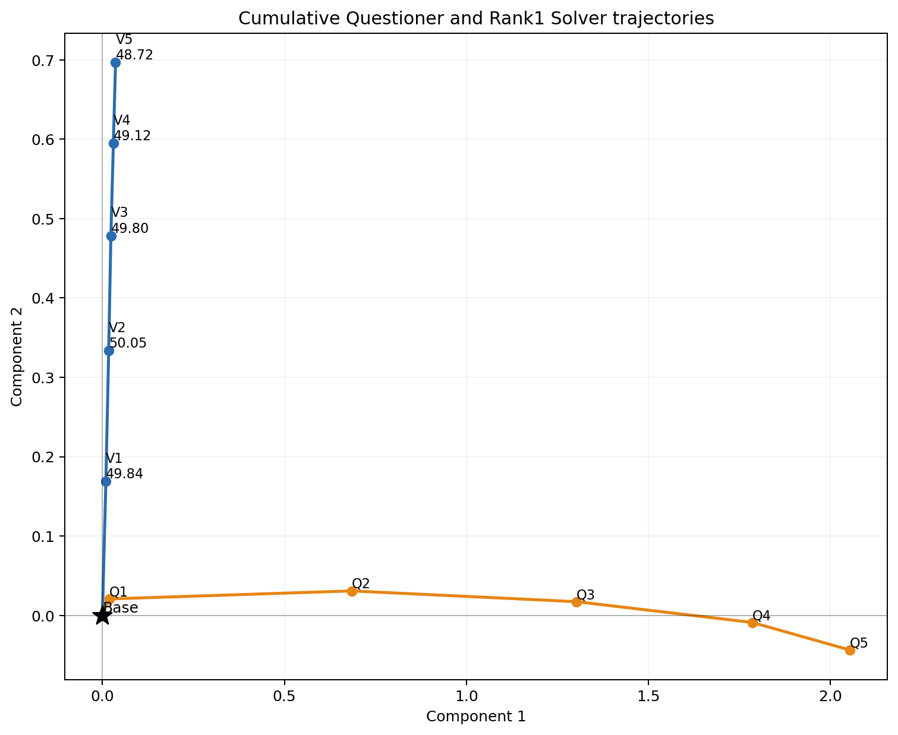
Cumulative Questioner and Rank1 Solver trajectories.
| family | round | history cosine | angle | orthogonal ratio |
|---|---|---|---|---|
| questioner_full | 2 | 0.014867 | 89.15 | 0.99989 |
| questioner_full | 3 | 0.030129 | 88.27 | 0.99955 |
| questioner_full | 4 | 0.044602 | 87.44 | 0.999 |
| questioner_full | 5 | 0.033646 | 88.07 | 0.99943 |
| solver_rank1 | 2 | 0.28334 | 73.54 | 0.95902 |
| solver_rank1 | 3 | 0.33368 | 70.51 | 0.94269 |
| solver_rank1 | 4 | 0.31885 | 71.41 | 0.94781 |
| solver_rank1 | 5 | 0.35022 | 69.5 | 0.93667 |
| solver_full | 2 | 0.24363 | 75.9 | 0.96987 |
| solver_full | 3 | 0.28942 | 73.18 | 0.9572 |
| solver_full | 4 | 0.28331 | 73.54 | 0.95903 |
| solver_full | 5 | 0.29426 | 72.89 | 0.95572 |
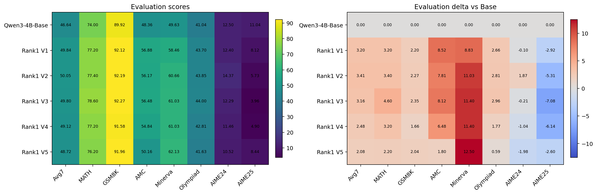
Rank1 V1--V5 benchmark scores and changes from Base.
The evaluation contains only five iterations. Any association with parameter geometry is descriptive, not causal or statistically conclusive.
| family | round | L2 | RMS | relative |
|---|---|---|---|---|
| questioner_full | 1 | 0.15771 | 2.4867e-06 | 9.7358e-05 |
| questioner_full | 2 | 1.0205 | 1.6091e-05 | 0.00062999 |
| questioner_full | 3 | 1.0363 | 1.6339e-05 | 0.00063969 |
| questioner_full | 4 | 1.0452 | 1.648e-05 | 0.00064521 |
| questioner_full | 5 | 1.0471 | 1.651e-05 | 0.00064638 |
| solver_rank1 | 1 | 0.23092 | 3.641e-06 | 0.00014255 |
| solver_rank1 | 2 | 0.23626 | 3.7252e-06 | 0.00014585 |
| solver_rank1 | 3 | 0.22726 | 3.5833e-06 | 0.00014029 |
| solver_rank1 | 4 | 0.21966 | 3.4634e-06 | 0.0001356 |
| solver_rank1 | 5 | 0.22219 | 3.5033e-06 | 0.00013716 |
| solver_full | 1 | 0.25134 | 3.9629e-06 | 0.00015515 |
| solver_full | 2 | 0.2624 | 4.1373e-06 | 0.00016198 |
| solver_full | 3 | 0.25494 | 4.0197e-06 | 0.00015738 |
| solver_full | 4 | 0.24714 | 3.8967e-06 | 0.00015256 |
| solver_full | 5 | 0.24889 | 3.9244e-06 | 0.00015365 |